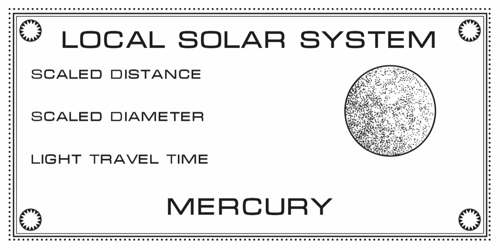

Local Solar System
The solar system, shrunk to fit your neighborhood. A set of nine engraved plaques — the Sun and all eight planets — custom-computed for your scale and ready to install along your street, trail, office hallway, or backyard fence.
Pick where your Sun lives and how far your Neptune roams. Every plaque is engraved with its scaled distance, scaled diameter, and the time light actually takes to get there.

Preview Your System
How far is it from your Sun to your Neptune? Type a distance and watch the whole solar system settle into your neighborhood.
Light travel time doesn’t shrink — that’s the real thing. Walking your system Sun to Neptune, you’ll beat sunlight’s four-hour trip by about three and a half hours.
How It Works
Claim your system
Check out below. Every system is made to order — one scale, one place, yours.
Plan the orbit
I’ll reach out to plan it with you — where the Sun goes, how far Neptune wanders, and what each plaque should say.
Install the planets
Your nine plaques arrive engraved with your numbers, ready to mount. Walk your solar system whenever you like.